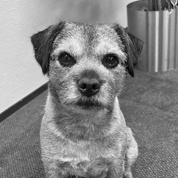
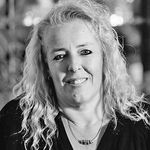
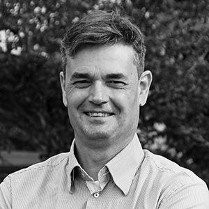

Ons team
We stellen graag een aantal collega’s aan u voor. In totaal staan 17 medewerkers voor u klaar om u te helpen bij het succesvol invullen van uw ondernemerschap. Neem contact met ons op om te bespreken hoe we u van dienst kunnen zijn.
Agaat van Ekeren
Functie:Relatiemanager
E-mail: avanekeren@dfobv.nl
Telefoon: 033 258 0460
Agaat is verantwoordelijk voor de klanttevredenheid van al onze klanten en werkt samen met Jurjen Oosterbaan Martinius aan diversen projecten. Daarnaast is zij tevens verantwoordelijk voor alle abonnementen die wij aanbieden. Denk hierbij aan het Wft Serviceabonnement en nieuwsbrieven die u bij ons kunt afnemen. Bent u benieuwd naar onze dienstverlening, of wat wij voor u kunnen betekenen, neemt u dan contact met Agaat op.
Anja Heetmayer Knorth
Functie:Gastvrouw
E-mail: gastvrouw@dfobv.nl
Telefoon: 033 258 0460
Anja heet u welkom als gastvrouw bij Bureau DFO en doet er alles aan om uw deelname aan onze bijeenkomsten prettig te laten verlopen.

Gijs
Functie:Huisvriend
Gijs is het vaste en zeer geliefde gezicht op kantoor. Met zijn vriendelijke en energieke karakter weet hij bij iedereen een glimlach op het gezicht te toveren. Hij krijgt volop aandacht van collega’s en draagt dagelijks bij aan een positieve en ontspannen werksfeer. Gijs is voor velen het hoogtepunt van de werkdag.
Gea van Esveld
Functie:Gastvrouw
Email: gastvrouw@dfobv.nl
Telefoon: 033 258 0460
Gea heet u welkom als gastvrouw bij Bureau DFO en doet er alles aan om uw deelname aan onze bijeenkomsten prettig te laten verlopen.
Ilona Vellekoop
Functie:Bestuurssecretaresse
E-mail: ivellekoop@dfobv.nl
Telefoon: 033 258 0460
Ilona is bij Bureau DFO werkzaam als secretaresse voor de NVHP
Jurjen Oosterbaan Martinius
Functie:Algemeen directeur
E-mail: joosterbaan@dfobv.nl
Telefoon: 033 258 0460
Al 30 jaar is Jurjen eigenaar van Bureau DFO, in ons kantoorpand in Hoevelaken. Jurjen is een autoriteit op het gebied van Wft. Hij kan u ondersteunen op het gebied van ondernemerschap en strategische vraagstukken en is een veelgevraagd spreker en fungeert vaak als sparringspartner.
U kunt hem o.a. benaderen over de volgende onderwerpen: Wft, klankborden, strategie, efficiënte bedrijfsvoering en het schrijven van columns. Wilt u weten wat hij voor u kan betekenen? Neem contact op met Agaat van Ekeren.
Martine Verhagen
Functie:Secretaresse
E-mail: mverhagen@dfobv.nl
Telefoon: 033 258 0460
Martine is bij Bureau DFO werkzaam als secretaresse voor een aantal secretariaten.
Nico den Besten
Functie:Medewerker digitale innovatie
E-mail: ndenbesten@dfobv.nl
Telefoon: 033 258 0460
Nico is verantwoordelijk voor de opmaak en verzending van diverse digitale nieuwsbrieven. Daarbij onderhoudt en actualiseert hij de website, biedt hij technische ondersteuning aan gebruikers en is hij betrokken bij de diverse uitingen die Bureau DFO plaatst op social media.
Het ontwerp van een logo, huisstijl of document neemt Nico ook voor zijn rekening.
Robert-Jan van Loon
Functie:Consultant
E-mail: rjvanloon@dfocompliance.nl
Telefoon: 033 258 0460
Robert-Jan is als consultant verantwoordelijk voor het begeleiden van wft-vergunningaanvragen en het beantwoorden van wft- en compliance gerelateerde vragen van klanten.
Ronald van Hamersveld
Functie:Financiële aministratie
E-mail: rvanhamersveld@dfobv.nl
Telefoon: 033 258 0460
Ronald is verantwoordelijk voor de financiële administratie van ons Bureau, haar partners en de diverse verenigingen waar wij het secretariaat voor verzorgen.
Sheila Boon
Functie:Secretaresse
E-mail: sboon@dfobv.nl
Telefoon: 033 258 0460
Sheila is bij Bureau DFO werkzaam als allround secretaresse op de afdeling managementsupport.

Tanja Heerze
Functie:Administratie
E-mail: theerze@dfobv.nl
Telefoon: 033 258 0460
Tanja verzorgt de facturatie van de producten die bij ons worden besteld en is verantwoordelijk voor het debiteurenbeheer. Tevens ondersteunt ze het secretariaat op het gebied van facturatie en doet ze hand-en-spandiensten binnen de administratie.
Tiny Floris
Functie:Gastvrouw
E-mail: gastvrouw@dfobv.nl
Telefoon: 033 258 0460
Tiny is voor veel cursisten het gezicht van Bureau DFO. Als gastvrouw verzorgt zij de catering voor ruim 3.000 deelnemers die per jaar de opleidingszalen van ons pand betreden.

Tjeerd Erkens
Functie:Onderzoeker
E-mail: terkens@dfobv.nl
Telefoon: 033 258 0460
Tjeerd is bij Bureau DFO verantwoordelijk voor alle marktonderzoeken zoals bijvoorbeeld het jaarlijkse Serviceprovider onderzoek. Voor DFO werkte hij als marktonderzoeker bij DTG (en haar voorloper Telefoongids en Gouden Gids) en bij een aantal bedrijven in de farmaceutische industrie.
Trineke Kuijer
Functie:Secretaresse
E-mail: tkuijer@dfobv.nl
Telefoon: 033 258 0460
Trineke is al enige jaren in dienst van Bureau DFO. Haar werkzaamheden zijn dan ook heel erg divers; van het afhandelen van de binnenkomende telefoontjes, ondersteunende werkzaamheden binnen de verschillende afdelingen, het verzenden van de verschillende bestellingen via onze webshop tot het ontvangen van bezoekers.
Willie van Puurveen –
van den Berg
Functie:Gastvrouw
E-mail: gastvrouw@dfobv.nl
Telefoon: 033 258 0460
Willie heet u welkom als gastvrouw bij Bureau DFO en doet er alles aan om uw deelname aan onze bijeenkomsten prettig te laten verlopen.
Overgenomen van www.dfobv.nl/ons-team/ · laatst gewijzigd 13 april 2026